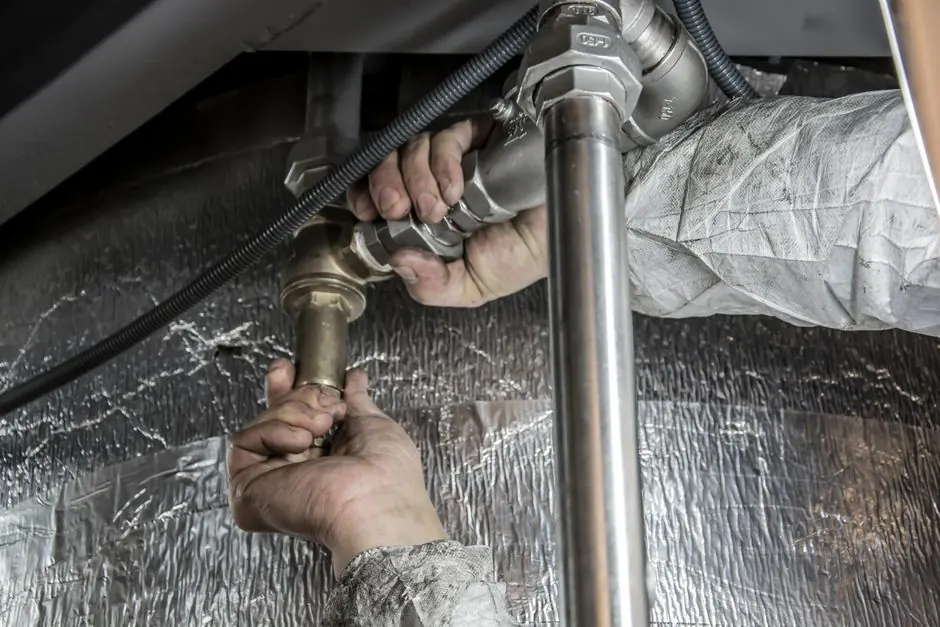

Restore Single-Cycle Efficiency
Dryer Taking Too Long to Dry Sarasota FL
If you're running your dryer two or three times just to dry a normal load of towels or jeans, something is wrong. Our Sarasota appliance technicians pinpoint the exact restriction — testing heating coils, thermostats, blower impellers, and sensor bars to restore fast, 40-minute drying.
Heat output testAirflow checkFast single-visit fix
Diagnosing the bottleneck
Why Your Dryer Takes So Long in Sarasota
We test four specific systems to solve slow-drying problems once and for all:
Dual Element Wattage Drop
Many modern electric dryers have two coils. If one breaks, the dryer produces lukewarm air that never fully dries clothes.
Restricted Blower Velocity
Lint clogged behind the blower wheel cuts cubic-feet-per-minute (CFM) air movement in half, trapping humid air inside.
Failing Cycling Thermostat
A drifting thermostat cuts heat off at 115°F instead of 150°F, cycling off before clothes have released moisture.
Sensor Bar Residue
Fabric softener film insulates sensor bars, tricking the computer into ending auto-dry cycles prematurely.
Comprehensive troubleshooting
We Don't Guess — We Measure With Digital Tools
Running an inefficient dryer burns through heating coils, wears out drive belts, and sends your electric bill skyrocketing. Our technicians use digital thermometer probes, anemometers, and multimeters to diagnose the exact issue on the first visit.
We serve Sarasota, Palmer Ranch, Gulf Gate Estates, Bee Ridge, and surrounding barrier islands with same-day appointments and transparent pricing.

Precision testingTemperature probes verify cycle temperatures before work is signed off.
Pricing transparency
Slow Dryer Repair Pricing in Sarasota
$130 - $350 depending on fault
Sensor & Thermostat Fix
Cleaning sensor bars and calibrating or replacing a faulty high-limit/cycling thermostat.
Blower & Duct Clearing
Removing packed lint from internal blower housings and connecting transitions.
Element or Gas Valve Coils
Replacing burned element coils or weak gas solenoid coils that extinguish mid-cycle.

Why does my dryer take 2 or 3 cycles to dry towels and clothes?
The most common culprit is poor exhaust airflow from lint accumulation in the vent pipe, followed by a partially burned out heating element coil, a failing cycling thermostat, or coated moisture sensor bars.
Can a partially grounded heating element cause slow drying?
Yes. A heating element can short out partially so that it glows with low wattage but never reaches operating temperature (around 135°F to 155°F), resulting in lukewarm air and perpetual dampness.
How do moisture sensor bars affect drying time?
Over time, dryer sheets and fabric softeners coat the electronic moisture sensor strips with a thin waxy film. The dryer falsely detects that clothes are dry and shuts off heat early, leaving damp laundry.
How much does it cost to repair a slow-drying dryer in Sarasota?
Slow-drying repairs typically range between $130 and $350 depending on whether the issue is sensor calibration, vent obstruction, or replacement of the dual heating element.
Get clothes dry the first time
Fix Your Slow Dryer Today
Stop wasting hours on endless laundry cycles. Call our Sarasota team today for prompt, professional service.

Talk with the local team
Request Slow Dryer Diagnosis
Our technicians are based locally in Sarasota and ready to resolve your dryer performance issues.